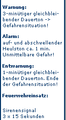

Bezirksfeuerwehrtag am 27. Februar 2009
Am 27. Februar 2009 fand in der Sporthalle in Oberbergern der diesjährige Bezirksfeuerwehrtag des Bezirkes Krems statt.
Anlässlich dieser Veranstaltung wurden einige Kameraden vom Bezirksfeuerwehrkommandanten LFR Walter Harauer mit Ehrungen, Ernennungen und Auszeichnungen bedacht.
Von der FF Lengenfeld wurde BM Robert Pölz, bisheriger Zugskommandant des 3. KHD-Zuges, im Rahmen des NÖ Katastrophenhilfsdienstes zum Kommandanten der 10. KHD-Bereitschaft (Bezirk Krems) ernannt!
Er folgt HBI Karl Knapp, welcher sein Amt zurücklegte.
Weiters wurde BM Pölz die Verdienstmedaille des NÖ Landesfeuerwehrverbandes in Bronze verliehen.
Zu den ersten Gratulanten zählten der anwesende Bürgermeister von Lengenfeld, Otmar Gschwantner, sowie Kommandant-Stv. BI Markus Hoffmann und Verwalter Günter Gruber.
 |
 |
Fotos: © FF Krems |
|
Informationen zum NÖ Katastrophenhilfsdienst

Mit 32 Mitgliedern die größte Feuerwehrjugendgruppe in Niederösterreich
Seit der Gründung der Feuerwehrjugend Lengenfeld im April 2005 ging die Anzahl der Mitglieder stetig aufwärts.
Mit 7 Mädels und 25 Burschen im Alter zwischen 10 und 15 Jahren ist es nun offiziell, dass
die FF Lengenfeld über die größte Feuerwehrjugendgruppe in ganz Niederösterreich verfügt.
Dieser Umstand ist zu einem großen Teil der hervorragenden Arbeit des Jugendführers LM Martin PENZ und seines Ausbilderteams zu verdanken.
Im Jahr 2008 wurden von den Mitgliedern der Feuerwehrjugend Lengenfeld ca. 5100 Übungs.- und Tätigkeitsstunden aufgebracht.
Neben den wöchentlich stattfindenden Jugendstunden im Feuerwehrhaus stellen die Mädels und Burschen bei verschiedenen Erprobungen, Wissenstests, Fertigkeitsabzeichen und Bewerben ihr Wissen und Können unter Beweis.
Auch Besuche im Kino, bei McDonalds, im Schwimmbad, sowie Radtouren, Besuche im Klettergarten in Rosenburg und vieles mehr stehen auf dem Programm.
Ein Höhepunkt ist mit Sicherheit auch der jährlich stattfindende Grillabend, bei dem die Eltern der Jugendlichen eingeladen und über die Aktivitäten des laufenden Jahres informiert werden. Die Vorführung eines eigens gedrehten Films vom Landeslager rundet diese Veranstaltung ab.
Eine derart große Jugendgruppe ist natürlich auch mit einem gewissen finanziellen Aufwand für die Feuerwehr verbunden.
Ein Dankeschön sei an dieser Stelle an die Gemeindevertreter der Marktgemeinde Lengenfeld, allen voran an Herrn Bürgermeister Otmar GSCHWANTNER gerichtet, der mit seinem Team immer wieder ein offenes Ohr für die Anliegen der Freiwilligen Feuerwehr hat.
Der Kommandant:
i.V. Markus Hoffmann, BI
(Kdt-Stv.)


Beförderung zum Brandmeister
Der Fahrmeister der Freiwilligen Feuerwehr Lengenfeld, LM Andreas Winkler, wurde am 04.02.2009 nach erfolgreicher Absolvierung
des Modules FÜ 20
in der Landesfeuerwehrschule Tulln
von OBI Franz ETTENAUER zum Brandmeister befördert!!
Das gesamte Kommando wünscht Andreas WINKLER alles Gute.

Jahreshauptversammlung mit Neuwahl des Kommandant-Stellvertreters
Am 4. Jänner 2009 fand im Festsaal in Lengenfeld die diesjährige Mitgliederversammlung statt.
Da der bisherige Kommandant-Stellvertreter, BI Leo Gwiß, nach 18-jähriger Tätigkeit sein Amt zurück legte, fand die Wahl des neuen Kommandant-Stellvertreters statt. Als sein Nachfolger wurde der bisherige Zugskommandant und Ausbilder, BM Markus Hoffmann zum Kommandant-Stellvertreter gewählt und in weiterer Folge zum Brandinspektor befördert. Weiters musste ein neuer Zugskommandant ernannt werden. LM Robert Pölz übernimmt ab nun diese Funktion und wurde zum Brandmeister befördert.
Aufgrund der neuen Funktion von LM Pölz wurde die Funktion des Gruppenkommandanten der 2. Gruppe frei.
FM Martin Eilenberger folgt LM Robert Pölz in dieser Funktion. Er erhält jedoch erst nach erfolgreicher Absolvierung der noch fehlenden Kurse den Dienstgrad "Löschmeister".
Aufgrund des Dienstpostenplanes steht uns seit September 2008 eine vierte Gruppe inkl. Gruppenkommandant zu.
Diese Funktion übernimmt mit Wirkung September 2008 Jugendführer LM Martin Penz.
Weiters wurde durch ABI Reinhard Mathes die Ernennungsurkunde zum Feuerwehrarzt an Dr. Ulrich Busch übergeben, welche vom NÖ Landesfeuerwehrkommandanten LBD Josef Buchta unterzeichnet wurde.
Auch überreichte ABI Mathes, in Vertretung des Abschnittsfeuerwehrkommandanten BR Gerhard Eisenbock, Urkunden für besondere Leistungen im Bewerb um das Feuerwehrleistungsabzeichen in Gold an LM Martin Penz und LM Robert Pölz.
Zahlreiche Ehrengästen, unter anderem Bgm. Otmar Gschwantner, Abschnittsfeuerwehrkomandant-Stv. ABI Reinhard Mathes sowie Unterabschnittskommandant HBI Gerhard Penz, gratulierten neben Kommandant OBI Franz Ettenauer den Inhabern der neuen Funktionen. ABI Reinhard Mathes lobte die FF Lengenfeld für ihre Leistungen im Jahr 2008 und wünschte allen ein gutes und erfolgreiches Jahr 2009.
Stefan Penz wird 1. Kassaprüfer, Robert Pölz wurde zum 2. Kassaprüfer ernannt.
Stefan Penz gibt seine Funktion als Nachrichtendienstsachbearbeiter ab, ihm folgt Benjamin Braun.
-
Beförderungen:
- zum Feuerwehrmann: Pölz Regina, Zierlinger Klaus
- zum Oberfeuerwehrmann: Eilenberger Martin
- zum Oberlöschmeister: Willner Martin
- zum Brandmeister: Pölz Robert
- zum Brandinspektor: Hoffmann Markus
- zum Ehrenbrandinspektor: Gwiß Leo
 |
 |
 |
 |
 |
 |
 |
 |
 |
 |
 |
 |
 |
 |
 |

Zivilschutzprobealarm am 4. Oktober 2008
Am Samstag, den 4. Oktober 2008, wurde wieder ein bundesweiter Zivilschutz-Probealarm durchgeführt.
Zwischen 12.00 und 13.00 Uhr wurden nach dem Signal "Sirenenprobe" die drei Zivilschutzsignale "Warnung", "Alarm" und "Entwarnung" in ganz Österreich ausgestrahlt.
Der Probealarm dient einerseits zur Überprüfung der technischen Einrichtungen des Warn- und Alarmsystems, andererseits soll die Bevölkerung mit diesen Signalen vertraut gemacht werden.


Viribus Unitis 2008
Am 17. und 18. September 2008 fand in Neulengbach (Bez. St. Pölten) die Übung "Viribus Unitis 2008" statt.
Die 120 teilnehmenden Führungskräfte von Bundesheer, Feuerwehr und Rettungsorganisationen übten mittels eines Gefechtssimulators des Bundesheeres verschiedene Katastrophenszenarien. Übungsziel war die Verbesserung der Kommandostrukturen im Ernstfall.
Seitens des Abschnittes Langenlois nahmen BSB Huber (FF Langenlois), HBI Thaller (FF Hadersdorf) und BM Hoffmann (FF Lengenfeld) an dieser Übung teil.

Artikel der Zeitung "heute"

Bezirksfeuerwehrtag am 29. Februar
Beim diesjährigen Bezirksfeuerwehrtag, der am 29.02.2008 in der Volksschule Brunn im Felde abgehalten wurde, waren rund 400 Funktionäre und Chargen der 127 Feuerwehren des Bezirks Krems anwesend.
Anlässlich dieser Veranstaltung wurden einige Kameraden vom Bezirksfeuerwehrkommandanten LFR Walter HARAUER mit Ehrungen, Ernennungen und Auszeichnungen bedacht.
Von der Freiwilligen Feuerwehr Lengenfeld erhielt BM Markus HOFFMANN das Ausbilderverdienstzeichen in Bronze.


Am 02.02.2008 veranstaltete die Volksschule Lengenfeld den alle zwei Jahre stattfindenden Faschingsumzug.
Die Feuerwehr Lengenfeld nahm mit 2 Gruppen am Umzug teil.
 |
 |
 |
 |
 |

Am 6. Jänner 2008 fand die Jahreshauptversammlung in der Golfbergstub'n statt.
Unter den Ehrengästen konnte Kommandant Franz Ettenauer Herrn Bgm. Otmar Gschwantner, Abschnittsfeuerwehrkomandant Gerhard Eisenbock
sowie Unterabschnittskommandant Gerhard Penz begrüßen. BR Eisenbock lobte die FF Lengenfeld für ihre Leistungen im Jahr 2007 und wünschte allen ein gesundes und einsatzarmes Jahr 2008.
Christian Eilenberger wird 1. Kassaprüfer, Stefan Penz wurde zum 2. Kassaprüfer ernannt.
Ernst Anissin gibt sein Amt aus persönlichen und gesundheitlichen Gründen ab. Daniel Tremmel wird neuer EDV-Sachbearbeiter.
-
Beförderungen:
- zum Feuerwehrmann: Braun Benjamin, Busch Sabine und Weixelbaum Lukas
- zum Oberfeuerwehrmann: Kittenberger Helmut
- zum Hauptfeuerwehrmann: Penz-Resch Norbert
- zum Oberlöschmeister: Winkler Franz
 |
 |
 |

Am 21. Dezember 2007 fand im Festsaal in Lengenfeld unsere Weihnachtsfeier statt.
Der Bürgermeister, die Patinnen und alle Feuerwehrmitglieder wurden recht herzlich dazu eingeladen.
Im Laufe des Abends wurde der Lagerfilm nochmals gezeigt und jedes Mitglied der Feuerwehrjugend bekam ein kleines Weihnachtsgeschenk.
 |
 |
 |

Zivilschutzprobealarm am 6. Oktober 2007
Am Samstag, den 6. Oktober 2007, wurde wieder ein bundesweiter Zivilschutz-Probealarm durchgeführt.
Zwischen 12.00 und 13.00 Uhr wurden nach dem Signal "Sirenenprobe" die drei Zivilschutzsignale "Warnung", "Alarm" und "Entwarnung" in ganz Österreich ausgestrahlt.
Der Probealarm dient einerseits zur Überprüfung der technischen Einrichtungen des Warn- und Alarmsystems, andererseits soll die Bevölkerung mit diesen Signalen vertraut gemacht werden.

Am 15. September 2007 schlossen unsere Kameraden Ulrich Busch und Sabine Turek in der Pfarrkirche in Schwallenbach den Bund der Ehe!
Die Freiwillige Feuerwehr Lengenfeld gratuliert ihnen herzlichst zu ihrer Hochzeit.
 |
 |
 |

Abschnittsfeuerwehrtag in Schiltern
Der diesjährige Abschnittsfeuerwehrtag des Abschnittes Langenlois fand am 08.06.2007 in Schiltern statt.
Im Zuge dieser Veranstaltung wurden von Landesfeuerwehrrat Walter HARAUER, der als Vertrter des Landesfeuerwehrverbandes anwesend war, Verdienstzeichen "zweiter und dritter Klasse" an Mitglieder der Freiwilligen Feuerwehren verliehen.
HFM Andreas SCHUSTER wurde für 25-jährige Mitgliedschaft bei der Freiwilligen Feuerwehr geehrt.


Am 19. Mai 2007 schloss unser Kamerad Harald Gwiß in der Pfarrkirche in Stratzing, mit seiner Freundin Katrin Siller, den Bund der Ehe!
Die Freiwillige Feuerwehr Lengenfeld gratuliert ihm herzlichst zu seiner Hochzeit.
 |
 |
 |

70er von Adolf Kniewallner
Am 18. April 2007 feierte unser langjähriges Feuerwehrmitglied Adolf Kniewallner seinen 70. Geburtstag.
Die Freiwillige Feuerwehr Lengenfeld gratuliert ihm herzlichst zu diesem Jubiläum.
 |
 |

Am 8. Jänner fand die Jahreshauptversammlung in der Golfbergstub'n statt.
Unter den Ehrengästen konnte Kommandant Franz Ettenauer Herrn Bgm. Otmar Gschwantner, Abschnittskomandant Gerhard Eisenbock
sowie Unterabschnittskommandant Gerhard Penz begrüßen.
Martin Willner bleibt 1. Kassaprüfer, Martin Eilenberger wurde zum 2. Kassaprüfer ernannt.
- Beförderungen:
- zum Feuerwehrmann: Hoffmann Nicolas, Tremmel Daniel und Winkler Andreas
- zum Löschmeister: Braun Martin
.